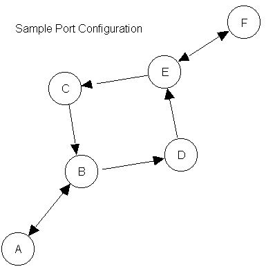

Home Page
F.A.Qs
Statistical Charts
Past Contests
Scheduled Contests
Award Contest
| Online Judge | Problem Set | Authors | Online Contests | User | ||||||
|---|---|---|---|---|---|---|---|---|---|---|
| Web Board Home Page F.A.Qs Statistical Charts | Current Contest Past Contests Scheduled Contests Award Contest | |||||||||
|
Language: VTAS - Vessel Traffic Advisory Service
Description In order to promote safety and efficient use of port facilities, the Association of Coastal Merchants (ACM) has developed a concept for a Vessel Traffic Advisory Service (VTAS) that will provide traffic advisories for vessels transiting participating ports.
The concept is built on a computer program that maintains information about the traffic patterns and reported movements of vessels within the port over multiple days. For each port, the traffic lanes are defined between waypoints. The traffic lanes have been designated as directional to provide traffic separation and flow controls. Each port is represented by a square matrix containing the distances (in nautical miles) along each valid traffic lane. The distances are defined from each row waypoint to each column waypoint. A distance of 0 indicates that no valid traffic lane exists between the two waypoints. Vessel traffic enters the port at a waypoint and transits the traffic lanes. A vessel may begin its transit at any of the waypoints and must follow a valid connected route via the valid traffic lanes. A vessel may end its transit at any valid waypoint. The service provided by the VTAS to transiting vessels includes: Projection of arrival times at waypoints Notification of invalid routes Projected encounters with other vessels on each leg of the transit. An ``encounter" occurs when two vessels are between common waypoints (either traffic lane) at a common time Warning of close passing with another vessel in the vicinity of a waypoint (within 3 minutes of projected waypoint arrival) Reported times will be rounded to the nearest whole minute. Time is maintained based on a 24 hour clock (i.e. 9 am is 0900, 9 PM is 2100, midnight is 0000). Speed is measured in knots which is equal to 1 nautical mile per hour. Input The input file for the computer program include a Port Specification to provide the description of the traffic patterns within the port and a Traffic List which contains the sequence of vessels entering the port and their intended tracks. The end of the input is indicated by a Vessel Name beginning with an ``*"
Port Specification: Output The output shall provide for each vessel as it enters the port a listing indicating the arrival of the vessel and its planned speed followed by a table containing the waypoints in its route and projected arrival at each waypoint, notification of Invalid Routes, projected Encounters on each leg, warning of close passing at waypoints. When encounter or close passing occurs, all involved vessels must be displayed in one line. The vessels should be sorted in order of departure into leg or port, in the case the departure is the same it should be sorted in order of the time at the first waypoint.
All times are to be printed as four-digit integers with leading zeros when necessary. Assumptions & Limitations: 1. Vessel names are at most 20 characters long. 2. There are at most 20 waypoints in a port and at most 20 waypoints in any route. 3. There will be at most 20 vessels in port at any time. 4. A vessel will complete its transit in at most 12 hours. 5. No more than 24 hours will elapse between vessel entries. Sample Input 6 ABCDEF 0 3 0 0 0 0 3 0 0 2 0 0 0 3 0 0 0 0 0 0 0 0 3 0 0 0 2 0 0 4 0 0 0 0 4 0 Tug 2330 12 ABDEF WhiteSailboat 2345 6 ECBDE TugWBarge 2355 5 DECBA PowerCruiser 0 15 FECBA LiberianFreighter 7 18 ABDXF ChineseJunk 1045 8 ACEF ChinesePunk 2045 8 ACEF ***** Sample Output Tug entering system at 2330 with a planed speed of 12.0 knots -- Waypoints: A B D E F -- Arrival: 2330 2345 2355 0010 0030 ++ Close passing with TugWBarge at Waypoint D ++ Project encounterg with TugWBarge on leg between Waypoints D and E ++ Project encounterg with PowerCruiser on leg between Waypoints E and F WhiteSailboat entering system at 2345 with a planed speed of 6.0 knots -- Waypoints: E C B D E -- Arrival: 2345 0005 0035 0055 0125 ++ Project encounterg with PowerCruiser on leg between Waypoints C and B ++ Close passing with PowerCruiser at Waypoint B TugWBarge entering system at 2355 with a planed speed of 5.0 knots -- Waypoints: D E C B A -- Arrival: 2355 0031 0055 0131 0207 ++ Close passing with Tug at Waypoint D ++ Project encounterg with Tug on leg between Waypoints D and E PowerCruiser entering system at 0000 with a planed speed of 15.0 knots -- Waypoints: F E C B A -- Arrival: 0000 0016 0024 0036 0048 ++ Project encounterg with Tug on leg between Waypoints F and E ++ Project encounterg with WhiteSailboat on leg between Waypoints C and B ++ Close passing with WhiteSailboat at Waypoint B LiberianFreighter entering system at 0007 with a planed speed of 18.0 knots !! Invalid Route Plan for Vessel: LiberianFreighter ChineseJunk entering system at 1045 with a planed speed of 8.0 knots !! Invalid Route Plan for Vessel: ChineseJunk ChinesePunk entering system at 2045 with a planed speed of 8.0 knots !! Invalid Route Plan for Vessel: ChinesePunk Hint  Source |
[Submit] [Go Back] [Status] [Discuss]
All Rights Reserved 2003-2013 Ying Fuchen,Xu Pengcheng,Xie Di
Any problem, Please Contact Administrator